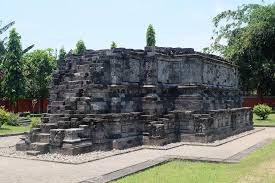

Deskripsi
Candi Surowono adalah salah satu candi peninggalan Kerajaan Majapahit yang terletak di Desa Canggu, Kecamatan Pare, Kabupaten Kediri. Candi ini dibangun pada abad ke-14 Masehi dan merupakan candi Hindu yang memiliki nilai sejarah dan arsitektur yang sangat tinggi.
Meskipun ukurannya tidak terlalu besar, Candi Surowono menyimpan keindahan relief yang sangat detail dan masih terawat dengan baik. Relief-relief yang ada menceritakan berbagai kisah dari cerita wayang dan kehidupan masa kerajaan Hindu-Buddha.
Sejarah dan Latar Belakang
Candi Surowono diperkirakan dibangun pada masa pemerintahan Raja Hayam Wuruk dari Kerajaan Majapahit. Candi ini awalnya berfungsi sebagai tempat pemujaan dan pendharmaan bagi Bhre Wengker, yaitu seorang bangsawan dari Kerajaan Majapahit.
Nama "Surowono" berasal dari kata "Surowono" yang berarti "tempat yang indah". Candi ini ditemukan kembali pada masa penjajahan Belanda dan telah mengalami beberapa kali pemugaran untuk menjaga kelestariannya.
Arsitektur dan Relief
Candi Surowono memiliki arsitektur khas candi Hindu dengan denah dasar persegi. Beberapa keunikan arsitektur candi ini antara lain:
- Bahan Bangunan: Terbuat dari batu andesit yang dipahat halus
- Ukuran: Berukuran relatif kecil dengan tinggi sekitar 5 meter
- Relief Cerita: Memiliki relief yang menceritakan kisah Sri Tanjung dan Arjuna Wiwaha
- Ornamen: Hiasan kala-makara yang khas candi Hindu Jawa
- Struktur: Terdiri dari bagian kaki, tubuh, dan atap candi
Kisah Relief yang Terpahat
Relief di Candi Surowono menceritakan beberapa kisah penting:
1. Kisah Sri Tanjung
Relief ini menceritakan tentang kesetiaan seorang istri bernama Sri Tanjung yang dituduh tidak setia oleh suaminya, Sidapaksa. Kisah ini menjadi simbol kesetiaan dan kejujuran dalam hubungan rumah tangga.
2. Kisah Arjuna Wiwaha
Menggambarkan perjalanan spiritual Arjuna dalam mencari senjata sakti untuk melawan musuh-musuhnya. Relief ini penuh dengan makna filosofis tentang perjuangan dan pencerahan.
3. Relief Binatang
Terdapat juga relief berbagai binatang yang melambangkan berbagai sifat dan karakter manusia dalam kehidupan.
Fasilitas
- Museum kecil dan informasi
- Area parkir yang luas
- Toilet umum yang bersih
- Pemandu wisata berpengalaman
- Papan informasi dan penjelasan
- Area foto yang strategis
- Taman dan area bersantai
- Warung dan penjual souvenir
Tips Berkunjung
- Gunakan jasa pemandu untuk memahami makna relief dengan lebih baik
- Datang pada pagi atau sore hari untuk menghindari panas terik
- Bawa kamera dengan lensa yang sesuai untuk memotret detail relief
- Pelajari sejarah candi sebelum berkunjung untuk pengalaman yang lebih bermakna
- Patuhi semua peraturan dan jangan memanjat atau merusak struktur candi
- Bawa air minum dan pelindung dari sinar matahari
- Jaga kebersihan lingkungan candi
Aktivitas yang Bisa Dilakukan
- Wisata Sejarah: Mempelajari sejarah dan arsitektur candi
- Fotografi: Mengabadikan keindahan relief dan struktur candi
- Edukasi: Belajar tentang budaya dan kepercayaan Hindu kuno
- Meditasi: Menikmati ketenangan di sekitar area candi
- Penelitian: Melakukan studi tentang arkeologi dan sejarah
- Wisata Keluarga: Mengenalkan warisan budaya kepada anak-anak
Lokasi dan Aksesibilitas
Candi Surowono terletak di Desa Canggu, Kecamatan Pare, Kabupaten Kediri. Lokasinya mudah dijangkau dengan kendaraan pribadi maupun angkutan umum. Dari pusat Kota Kediri, perjalanan menuju candi memakan waktu sekitar 30-45 menit.
Nilai Penting Candi Surowono
Candi Surowono memiliki nilai penting sebagai:
- Situs warisan budaya nasional
- Sumber pembelajaran sejarah dan arkeologi
- Bukti kejayaan Kerajaan Majapahit di wilayah Kediri
- Contoh seni pahat dan arsitektur Jawa kuno yang luar biasa
- Destinasi wisata edukasi yang bernilai tinggi